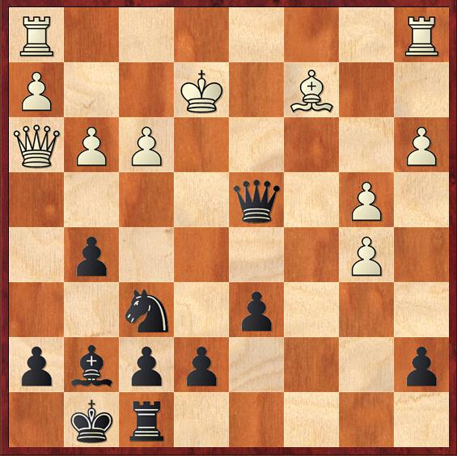

有趣的次序。英国式开局起步，至此转成了西西里新龙式变例。由于黑方空间相对狭小，现在选择此布局的高手不是特别多。
5...Nf6如果5...Bg7 6.Be3 Nf6 7.Nc3 Ng4 8.Qxg4 Nxd4 9.Qd1 Ne6 10.Be2 白方稍好。
6.Nc3 d6 7.f3!?7.Be2 常见的续着。; 7.Be3?! Ng4!
7...Qb6?!由于当时自己的龙式布局库没有7.f3这招棋，以为对手这招会有一定的问题，想让对手为此付出一定代价。如自然的8.Nb3后，黑后控制G1–A7这条大斜线，白方很难易位出子。可以是..7...Nxd4 8.Qxd4 Bg7 9.Be3 0–0 10.Qd2 a5
8.Be3!好棋！因为黑后威胁着b2兵，所以忽略了这有力的招法。
8...Be6!?8...Bg7? 9.Nf5! Qxb2 10.Nxg7+ Kf8 11.Na4 得子，白胜势。8...Qxb2?? 9.Na4 Qb4+ 10.Bd2 Qa3 11.Nb5+–黑后身陷囹圄。
9.Qd2?!看起来自然且合理的招法，守住b2兵和e3象，威胁闪击。但是8...Be6正是为这步棋准备的..9.Be2 Rc8 10.0–0 白方优势明显。
9...Nxd4 10.Bxd4 10...Bh6!!神来之笔！！对手显然在之前没有注意到这着棋，巧妙的手法，让黑棋顺利的完成出子，此时对手已经有些乱了。
11.Qf211.Bxb6 Bxd2+ 12.Kxd2 axb6 13.Nd5 Nxd5 14.cxd5 Bd7 大致均势。
11...Qa511...Qb4 12.Bd3 0–0 13.0–0 Rac8 14.b3 Bf4 15.a3 Qa5
12.a3?!不太理智的决定。因为前面白方获得一些优势，现在不太甘心简单平先，总想获得一些什么。应该正常出子12.Be2大致均等。
12...0–0 13.b4 Qd8 14.Be2 Rc8 15.Nd515.Bxf6 exf6 16.Qxa7 f5! 黑方拥有强大主动权; 15.Bxa7 Bxc4 16.0–0 Bxe2 17.Nxe2 Rc2 18.Be3 Bxe3 19.Qxe3 Qa8 20.Rfc1 Rfc8
15...Bxd5 16.exd5?!16.cxd5 Rc2 17.0–0 Qc7 黑方主动。
16...b5!!吹起进攻的号角。突破后翼，渗透到白方阵营。
17.Qh4 Bg7 18.cxb5 Rc2!入侵，阻止白方易位。
19.g3 Qa8 [19...Qc8] 20.Bd3 Qxd5!?也许不是理论最佳招法，但是对对手的强大压力是我选择这着棋的原因。20...Rc7 21.0–0 Qxd5 简单获得优势。
21.Bxc2 g5! 22.Qh3 Qxd4 23.Ke2  23...g4!!封锁白后对c8格的控制。
24.fxg4 Qb224...Ne4 25.Qg2 f5
25.Rac1 Rc8 26.Kd1 Ne4!白方已无力回天。26...Qd4+ 27.Ke2 Ne4
27.Qxh7+ Kxh7 28.Bxe4+ Kh6 29.Rxc8 Qd4+白方少子，黑胜。0–1